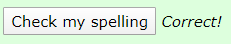

I developed The Spelling Game between February 20th and February 23rd 2020 to fulfill a homework requirement for CSCI 4208 at the University of New Orleans. The game is very simple to use. The user clicks a button which provides a recording of a hard-to-spell word. Then, the game provides a text box in which the user can spell the word. The game checks to determine if the word has been spelled correctly. If so, the game responds with Correct! Otherwise the game responds with Not Correct!
This is a very casual game. There are no time limits, and the user can attempt as many spellings as he or she desires.
The Spelling Game does not have multiple views. It has a single screen through which the user scrolls. Each of the 26 letters of the alphabet is associated with a hard-to-spell word.
At the top of the game, there is a brief introduction wherein the player is advised how the game is played. Just below that, the game begins. The player can start with any of the 26 letters of the alphabet, and there is no order enforced. But let’s say the player starts with the letter “a”. The player will see the button shown below:
When the player presses that button, it will play a hard to spell word, typically beginning with the letter “a”. I say “typically” because the game may intentionally try to trick the player! For example, the common Louisiana surname, “Hebert” is phonetically pronounced like this: A-bear.
After the player hears the word, he is invited to spell it in the textbox. Note that spelling must be lower case.
After the word is spelled, the user is provided with a button that offers to check the player’s spelling:
If the player has spelled it correctly, he or she will see this:
Otherwise, the player will see this:
Then the player can go to the go to the next hard-to-spell word, or any word in the entire alphabet. As was said previously, there is no requirement to go in order.
The screen capture below shows the sequence of hard-to-spell words between “c” and “g”. Note that the background colors alternate between pale green and white. This is primarily done to give the game a measure of visual appeal.
JavaScript has three responsibilities in The Spelling Game. The first is to play the mp3 audio file. To accomplish this task the game author found a method on the fabulous website, w3schools.
Second, JavaScript must evaluate the spelling that the user placed in the textbox. That is, it gets the “value” in the textbox. The spelling is evaluated using the triple equal sign (“===”).
Third, JavaScript advises Correct! or Not Correct! by using an innerHTML operation on a <span> element.
The Spelling Game, as currently constituted, makes no server requests.
Recall from an earlier discussion that The Spelling Game does not have multiple views. It has a single screen through which the user scrolls. Here are the various libraries used: